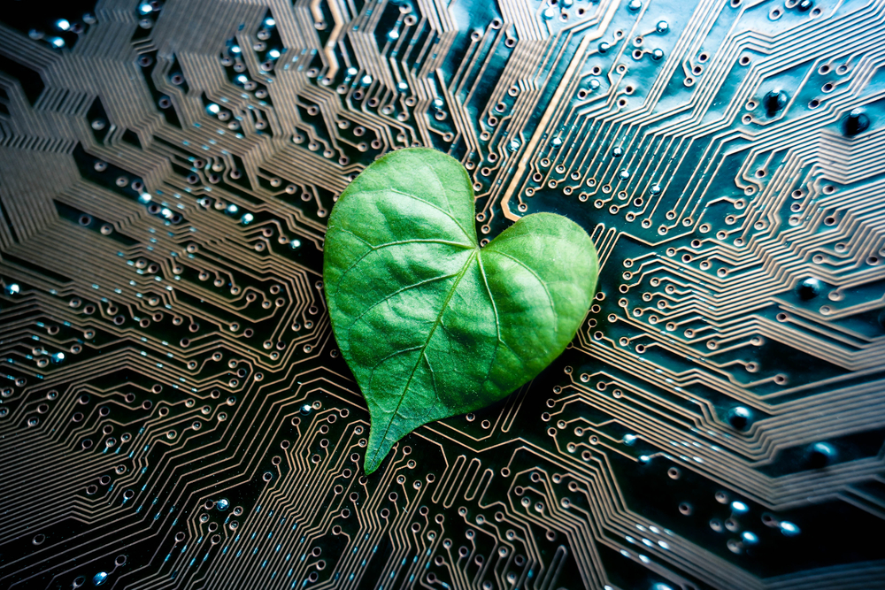
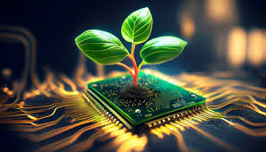
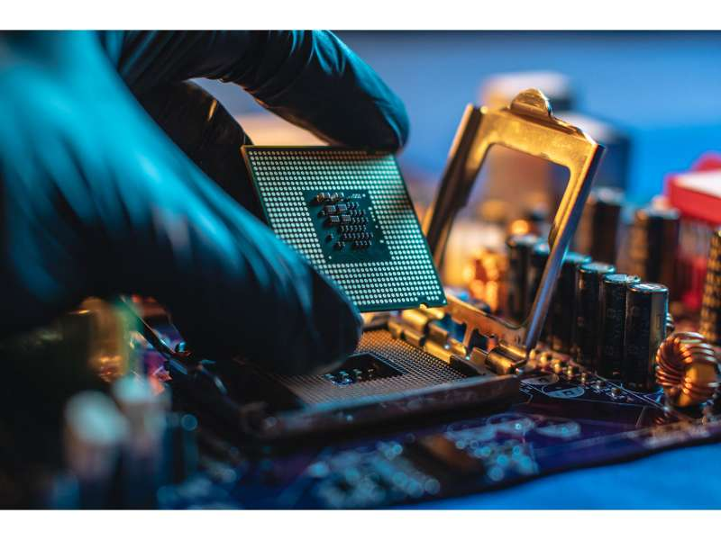
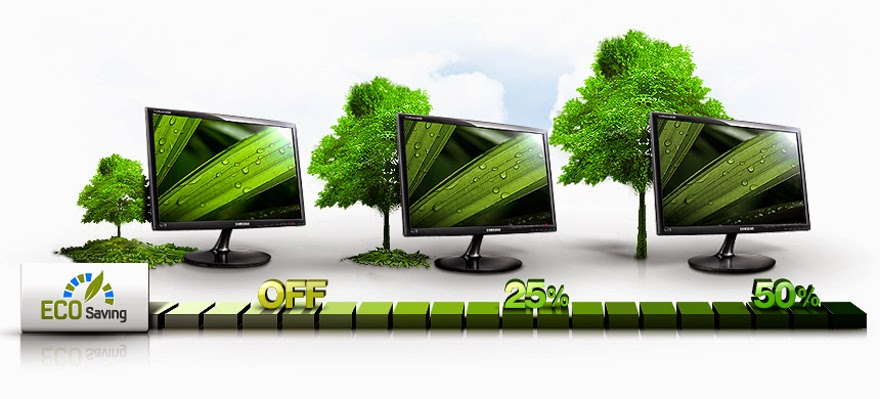

📖 ¿Qué es la Informática Ecológica?
También llamada Green IT, es la práctica de diseñar y usar ordenadores de manera eficiente para minimizar la huella tóxica y energética.
1. La importancia de un diseño inteligente

Se trata de crear dispositivos modulares donde si se rompe una pieza, solo cambies esa y no el equipo entero. Esto fomenta la economía circular.
2. Estrategias para una tecnología limpia

🔌 Eficiencia Energética
Procesadores que hacen el mismo trabajo gastando menos luz.
- Materiales verdes: Uso de aluminio reciclado o bioplásticos.
☁️ Centros de Datos Verdes
Empresas que mueven sus servidores a lugares fríos para usar la temperatura natural en lugar de aire acondicionado industrial.
3. El concepto de "Software Verde" (Green Coding)
No solo el hardware debe ser ecológico, también el código que escriben los programadores.
- Código eficiente: Un programa bien escrito hace que el procesador trabaje menos. Si el procesador trabaja menos, gasta menos batería y genera menos calor.
- Eliminación de "Bloatware": Evitar instalar funciones innecesarias en las apps ayuda a que los dispositivos viejos sigan siendo útiles, evitando que el usuario los tire por ser "lentos".
4. Virtualización y Consolidación de Servidores

Antes, cada aplicación necesitaba su propio servidor físico (una caja metálica gastando luz). Con la informática ecológica usamos la Virtualización.
- Menos máquinas físicas: Un solo servidor potente puede simular ser 50 servidores pequeños.
- Reducción de espacio y calor: Al tener menos máquinas físicas, necesitamos salas más pequeñas y mucho menos aire acondicionado, lo que reduce la factura eléctrica hasta en un 60%.
5. Ventajas y beneficios curiosos

- Menos ruido: Los equipos ecológicos son más silenciosos porque se calientan menos.
- Ahorro de luz: Aplicar estas medidas reduce el gasto eléctrico de una oficina considerablemente.
- Derecho a reparar: La informática ecológica apoya que los fabricantes den manuales y piezas para que cualquiera pueda arreglar sus equipos.
Conclusión
La informática ecológica busca reducir el impacto ambiental de la tecnología mediante diseños más eficientes, software optimizado y mejores prácticas en el uso de los recursos tecnológicos.
Documento creado para la concienciación ambiental en entornos de desarrollo.